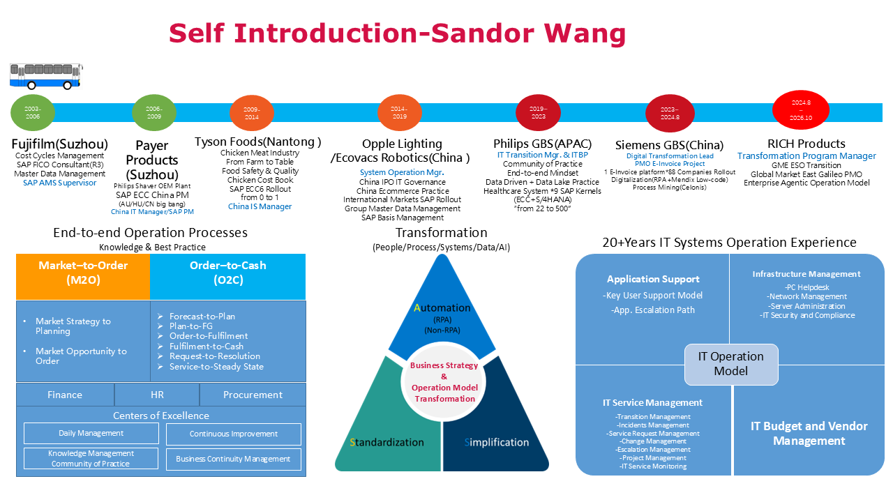

Sandor Wang
企业 AI 转型 · 业务流程 · Agentic Enterprise · 苏州
苏州。二十五年，把企业流程做成系统。现在做企业 AI 必须跑在里面的那一层 —— Enterprise Harness。
我不认为企业 AI 会死在模型上。它会死在 Harness 上 —— 那一层决定了谁有权批准 Agent 的工作、它能碰什么、以及事后有没有人能证明到底发生了什么。模型是租来的。那一层，才是公司自己的。
我用的框架
Agent
=
模型 + Harness
企业
=
Agentic BPM
×
Agentic Organization
×
Agent Platform
×
Enterprise Harness
第一行是加法：一个 Agent，是模型加 Harness。第二行是乘法 —— 四个维度不是菜单，任何一项为零，整个就是零。
- Agentic BPM事 —— 流程成为宿主，Agent 成为流程里的公民
- Agentic Organization责 —— 具名的角色、真实的决策、谁承担后果
- Agent Platform力 —— 运行时、工具、记忆、可以随时替换的模型
- Enterprise Harness证 —— 关得上的门、对得上的账、第三方能核的证据
短片
五条路 —— 流程、人、技术、数据、AI —— 各走各的，然后并成一条。交付 21 → 7 天。最后一句就是全部论点：流程自动化交给 Agent，判断留给人。
开放两类岗位：AI 公司的企业交付 / 解决方案 / FDE 方向，或企业内部的 AI 转型 PMO 负责人。
我在找什么样的位置 →
在做的事
- 现在
-
Enterprise Harness
一个公开的定义，加一个能跑起来的极小实现，只做决定"产出能不能被企业接受"的那两件事：具名授权，和双账本加哈希链。
83 个测试 · Python 3.11+ · 只用标准库 · 天生 fail-closed
- 2026
-
两周，把 Agent 治理做出来
一个跨转型生命周期的 Agent 治理 PoC：哪个 Agent 有权做什么、在哪里必须停下来等人、必须留下什么。能批、能停、能审计。
475 条流程 · 8 步旅程 · 6 道门 · 双账本
- 2026
-
证据优先的研究
每条结论都能回到来源，反证是必填项而不是补丁，最终由人签字。
106 条证据 · 58 个来源 · 人工签署
- 2025–26
-
全球 SAP S/4HANA 上线的 PMO 平台
以 PMO 身份设计并建设该项目的平台 —— 从 Excel 和会议，搬进一套单一事实来源，4.5 个月从 0 到上线。项目组合、计划、RAID、资源、预算、SOW。
4.5 个月 · 56 页面 · 51 表 · 11.9 万行 · 1,485 条流程 · 455 条分类标准
- 更早
-
转型与系统管理
美资食品公司、全球医疗器械公司、工业集团、机器人公司、照明制造商、禽类食品企业、数字影像、个人护理。
9 家公司 · 7 个行业 · 团队最多 19 人 · 10 个亚太市场 · 九国共享服务转移
写的东西
关于 Harness 的笔记，都是一边做一边写的。不绕。
怎么开始
一家企业、一条价值流、九十天。1 个项目 · 3 个数字员工 · 1 道人审门 · 1 张高管周报。 第 30 天是检查点：如果没有哪个经理会读它的产出，就缩小范围、换打法，或者停。
我把止损规则写出来，因为没有止损规则的计划就是推销。不新增平台预算，不接第二条价值流，不编我还没法测量的 ROI。
更早以前
- 2024–26 转型项目经理，亚太 —— 一家美资食品公司
- 2023–24 数字化转型负责人，共享服务 —— 一家工业集团
- 2019–23 IT 业务伙伴 —— 一家全球医疗器械公司
- 2009–19 食品与机器人行业的系统管理 —— 两家工厂通过 FDA-SSOP、GMP、HACCP；做过集团内第一个中国 SAP 上线
- 2003–09 SAP 与系统岗位 —— 数字影像、个人护理；从 FICO Key User 到应用主管
- 教育 香港理工大学 信息系统硕士

七个行业章节，以及它们加起来的三样东西：端到端流程认知、一条转型路径 —— 标准化、简化、自动化 —— 和一套 IT 运营模型。
点击任意处关闭 · click anywhere to close
联系
常驻苏州。工作地点：上海、苏州；接受 杭州、北京 的 relocation。优先管理岗，也接受高级项目负责人 / 转型顾问。
邮箱· 招我 / 合作·中文简历·English CV·GitHub·开一个 issue·LinkedIn·English